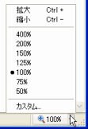
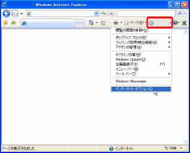
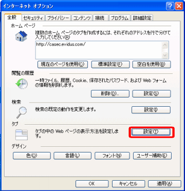
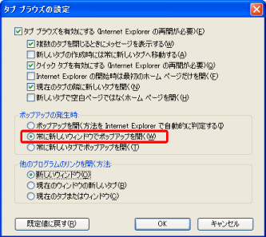

CASEC 環境チェック
◆ Internet Explorer 7.0 の設定の確認
上記を確認し、設定が完了しましたら「次へ」をクリックしてください。
１．Webページの拡大率の確認方法と設定方法
１－１．Internet Explorer画面の右下隅に
「100%」
と表示されているかを確認してください。
「100%」
と表示されているかを確認してください。

１－２．「100%」以外の倍率になっている場合は、
右側の「▼」をクリックし、
表示されたポップアップメニューから
「100%」
を選択してください。
右側の「▼」をクリックし、
表示されたポップアップメニューから
「100%」
を選択してください。
２．ポップアップを新しい画面で開く設定の確認方法と設定方法

２－１．Internet Explorer のメニューから
[ツール]→[インターネット オプション]
を開きます。
[ツール]→[インターネット オプション]
を開きます。

２－２．[インターネット オプション]ダイアログ
で[タブ]の[設定]ボタンをクリックします。
で[タブ]の[設定]ボタンをクリックします。

２－３－１．[タブ ブラウズの設定]
ダイアログで
「タブ ブラウズを有効にする
(Internet Explorerの再起動が必要)」
にチェックがされている場合には、
[ポップアップの発生時]欄で
[常に新しいウィンドウで
ポップアップを開く]
を選択し、
[OK]ボタンをクリックしてください。
ダイアログで
「タブ ブラウズを有効にする
(Internet Explorerの再起動が必要)」
にチェックがされている場合には、
[ポップアップの発生時]欄で
[常に新しいウィンドウで
ポップアップを開く]
を選択し、
[OK]ボタンをクリックしてください。

２－３－２．「タブ ブラウズを有効にする
(Internet Explorerの再起動が必要)」
にチェックがされていない場合は、
そのまま[OK]ボタンをクリックして
ください。
(Internet Explorerの再起動が必要)」
にチェックがされていない場合は、
そのまま[OK]ボタンをクリックして
ください。
１．Webページの拡大率が100%になっていますか？
Internet Explorer 7.0 の拡大機能を利用すると、問題文が正しく表示されない場合があります。 受験中は拡大機能を利用せず、「100%」のままで利用してください。
確認方法と設定方法はこちら２．ポップアップを新しい画面で開く設定になっていますか？
ブラウザ のタブブラウズ機能で、ポップアップ画面をタブで開く設定にしていた場合、スコアが正しく表示されない場合があります。
確認方法と設定方法はこちら受験中はポップアップを新しい画面で開く設定にしてください。